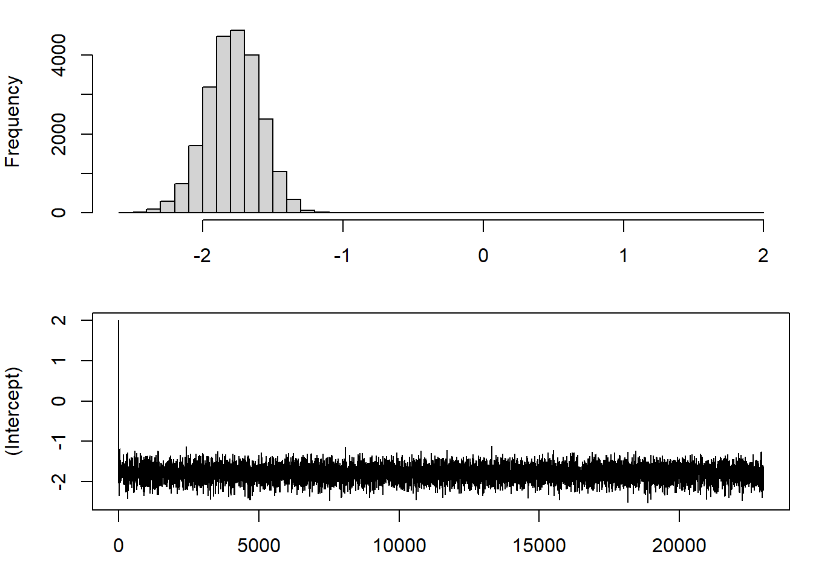
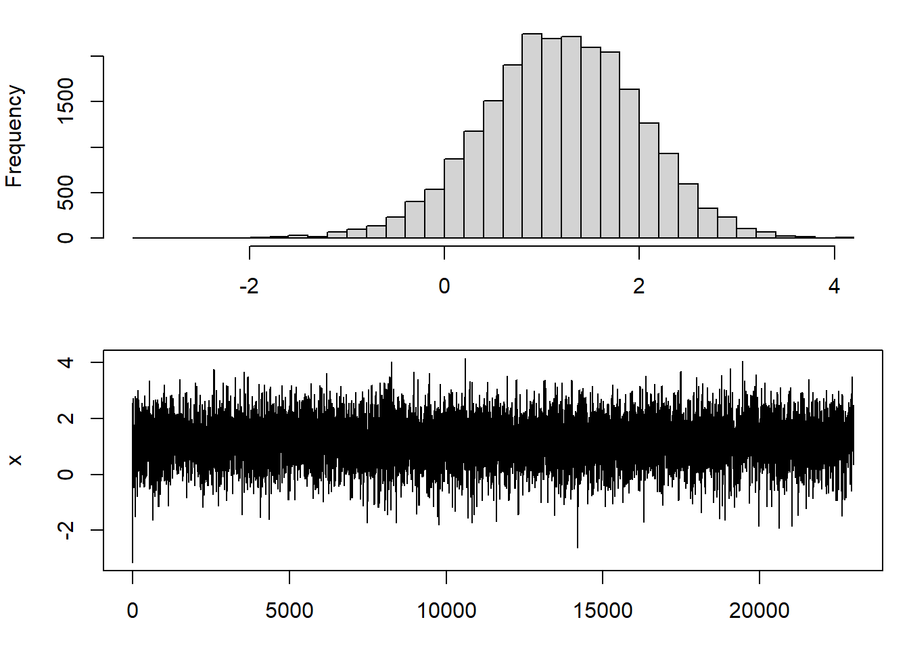

Chapter 7 Uso del paquete Metropolis en R
data("magfields", package="metropolis")
# random walk
res.rw = metropolis_glm(y ~ x, data=magfields, family=binomial(), iter=20000, burnin=3000, adapt=FALSE, guided=FALSE, block=TRUE, inits=c(2,-3), control = metropolis.control(prop.sigma.start = c(0.05, .1)))
summary(res.rw, keepburn = FALSE)$nsamples
[1] 20000
$sd
(Intercept) x
0.1870940 0.8565178
$se
(Intercept) x
0.0109079 0.1120727
$ESS_parms
[1] 294.19637 58.40808
$postmean
mean normal_lci normal_uci
(Intercept) -1.778688 -2.1453924 -1.411984
x 1.240300 -0.4384751 2.919075
$postmedian
median pctl_lci pctl_uci
(Intercept) -1.774736 -2.1594707 -1.413966
x 1.260167 -0.5570205 2.934671
$postmode
mode hpd_lci hpd_uci
(Intercept) -1.766332 -2.1746278 -1.431942
x 1.257571 -0.5541435 2.938285# guided, adaptive
res.ga = metropolis_glm(y ~ x, data=magfields, family=binomial(), iter=20000, burnin=3000, adapt=TRUE, guided=TRUE, block=FALSE, inits=c(2,-3))
summary(res.ga, keepburn = FALSE)$nsamples
[1] 20000
$sd
(Intercept) x
0.1887433 0.8039617
$se
(Intercept) x
0.002139775 0.009397736
$ESS_parms
[1] 7780.489 7318.537
$postmean
mean normal_lci normal_uci
(Intercept) -1.783400 -2.1533369 -1.413463
x 1.195689 -0.3800755 2.771454
$postmedian
median pctl_lci pctl_uci
(Intercept) -1.779390 -2.1692698 -1.429546
x 1.204767 -0.4308701 2.719736
$postmode
mode hpd_lci hpd_uci
(Intercept) -1.764664 -2.1311923 -1.396892
x 1.246514 -0.4152461 2.725762
7.1 Uso del paquete R, valores iniciales inteligentes
podemos usar la opción “glm” en los valores iniciales para inicializar la cadena con las estimaciones de MLE. Esto puede obtener un poco más de eficiencia y permitir una quema reducida.
# guided, adaptive
res.ga.init = metropolis_glm(y ~ x, data=magfields, family=binomial(), iter=20000, burnin=1000, adapt=TRUE, guided=TRUE, block=FALSE, inits="glm")
summary(res.ga.init, keepburn = FALSE)$nsamples
[1] 20000
$sd
(Intercept) x
0.1910264 0.8117856
$se
(Intercept) x
0.002187349 0.009279116
$ESS_parms
[1] 7626.942 7653.666
$postmean
mean normal_lci normal_uci
(Intercept) -1.779687 -2.1540987 -1.405275
x 1.190642 -0.4004577 2.781742
$postmedian
median pctl_lci pctl_uci
(Intercept) -1.774436 -2.1665633 -1.418378
x 1.230554 -0.5138752 2.703918
$postmode
mode hpd_lci hpd_uci
(Intercept) -1.766599 -2.1459323 -1.399196
x 1.246608 -0.4553881 2.7491187.1.1 Ampliación de los resultados del modelo logístico después de que se generan las muestras
Usando la función, “diferencia de riesgo” desde arriba, podemos usar la salida de nuestro modelo anterior para obtener Estimaciones bayesianas de la diferencia de riesgo. En general, esta es una forma útil de extender las simulaciones MCMC a nuevos estimandos que pueden no estar directamente parametrizados en el modelo.
# guided, adaptive
beta = as.matrix(res.ga.init$parms[, c("b_0", "b_1")])
y = magfields$y
X = cbind(rep(1, dim(magfields)[1]), magfields$x)
1000*riskdifference(y,X,beta[1,])[1] 0.1132425####################################################
# calculate risk difference for every value of model coefficients
rd.ga.init = apply(beta, 1, function(b) 1000*riskdifference(y,X,b))
par(mfcol=c(2,1))
plot(density(rd.ga.init), xlab = "RD*1000", ylab="Kernel density", main="", xlim=c(-.2, 2.5))
plot(rd.ga.init, type='l', xlab = "RD*1000", ylab="Iteration", ylim=c(-.2, 2.5))############################################
par(mfcol=c(1,1))
# posterior mean, median, credible intervals
mean(rd.ga.init[-c(1:1000)])[1] 0.1517853#############################################
quantile(rd.ga.init[-c(1:1000)], p = c(.5, .025, .975) ) 50% 2.5% 97.5%
0.10763217 -0.01949789 0.59457738